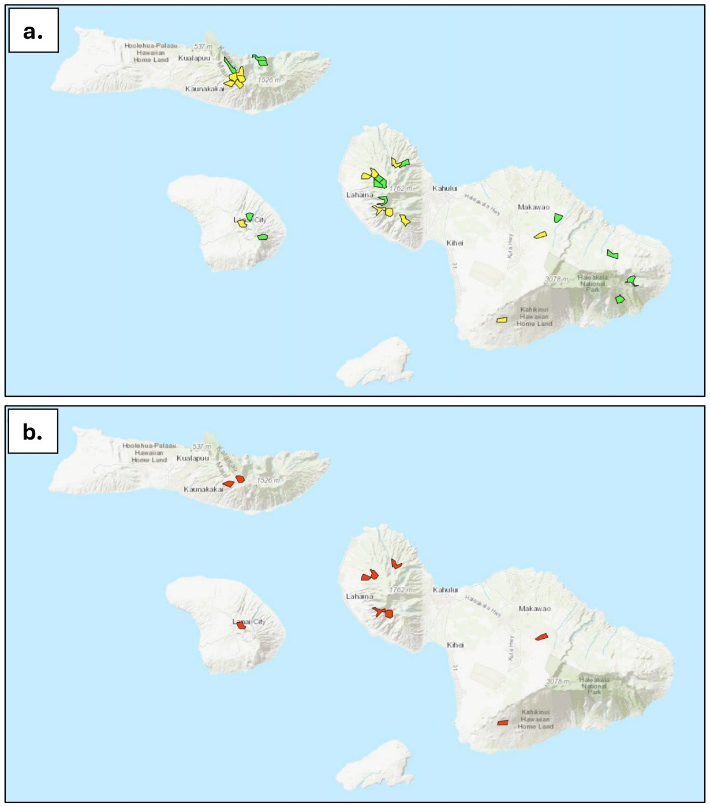

Why snails are in crisis
The situation for native land snails, kāhuli, is dire.plan p.57, lines 2396-2397 Hawaiʻi once supported at least 750 native land snail species, and only 10 to 35 percent may still survive.plan p.57, lines 2398-2400 Many of those that remain are at risk of extinction.
The Snail Taxonomic Team determined that all 49 at-risk snail species on Maui Nui face imminent extinction.plan p.21, lines 1071-1072 Because of this, the plan focuses first on preventing these losses through a network of exclosures. Broader habitat recovery is not possible yet.plan p.21, lines 1072-1079
Without extinction prevention there will be no snails to recover. Keeping three populations of every species safe is the plan's interim recovery step.plan p.60-61, lines 2535-2544
The species
The 49 at-risk snails belong to nine genera. More than half (29) are in the genus Partulina. Others include Newcombia, Perdicella, Laminella, Pleuropoma, Amastra, Leptachatina, Auriculella and Lyropupa.plan App 3 (Terrestrial Snails rows) and App 6 pp.A6-1 to A6-2, lines 7482-7553 Many survive in only one or two known wild populations, and two have none known in the wild.plan App 6, Current Populations column
Three species are listed as endangered: Newcomb's tree snail (Newcombia cumingi) and two Lānaʻi tree snails (Partulina semicarinata and Partulina variabilis).plan App 6 (ESA Listing column); App 3 common names The other 46 are not listed, but experts found them just as close to extinction. This is a clear example of why the plan looks beyond the endangered species list.
Experts worked with Operational Taxonomic Units (OTUs) rather than formal species names, because some snails are taxonomically uncertain or are species complexes. The plan reports them as species.plan App 1 p.A1-7, lines 5196-5198
Full list of at-risk snails (Appendix 6)Details
"Current populations" is the number of known wild populations. Every species faces imminent extinction and has an interim goal of three protected populations. E = federally endangered.plan App 6 pp.A6-1 to A6-2, lines 7482-7553
At-risk terrestrial snails of Maui Nui (plan Appendix 6)
| Species | Current populations | ESA |
|---|---|---|
| Amastra montana | 1 | |
| Auriculella lanaiensis | 2 | |
| Laminella aspera | 0 | |
| Laminella citrina | 1 | |
| Laminella venusta | 5 | |
| Leptachatina nitida | 1 | |
| Leptachatina vitreola | 4 | |
| Lyropupa striatula | 2 | |
| Newcombia canaliculata | 1 | |
| Newcombia cumingi | 1 | E |
| Newcombia cumingi sp. 1 | 1 | |
| Newcombia pfeifferi | 6 | |
| Partulina anceyana | 3 | |
| Partulina crocea | 0 | |
| Partulina dolei | 2 | |
| Partulina induta | 1 | |
| Partulina kaaeana | 1 | |
| Partulina marmorata | 1 | |
| Partulina mighelsiana bella | 5-10 | |
| Partulina mighelsiana mighelsiana | 5-10 | |
| Partulina mighelsiana polita | 5-10 | |
| Partulina mighelsiana ssp. | 5-10 | |
| Partulina perdix ssp. | 1 | |
| Partulina perdix undosa | 2 | |
| Partulina porcellana ssp. | 1 | |
| Partulina porcellana wailuaensis | 3 | |
| Partulina proxima schauinslandi | 3 | |
| Partulina proxima ssp. | 1 | |
| Partulina redfieldi | 15+ | |
| Partulina semicarinata | 3 | E |
| Partulina splendida | 4 | |
| Partulina tappaniana ampulla | 1 | |
| Partulina tappaniana dubiosa | 1 | |
| Partulina tappaniana eburnea | 1 | |
| Partulina terebra lignaria | 2 | |
| Partulina terebra ssp. | 1 | |
| Partulina tessellata | 5 | |
| Partulina undosa | 2 | |
| Partulina ustulata | 1 | |
| Partulina variabilis | 1 | E |
| Partulina virgulata | 5-10 | |
| Perdicella helena balteata | 5-10 | |
| Perdicella helena ssp. | 5-10 | |
| Perdicella kuhnsi | 5-10 | |
| Perdicella ornata | 5-10 | |
| Pleuropoma laciniosa piliformis | 1 | |
| Pleuropoma laciniosa ssp. 1 | 7 | |
| Pleuropoma laciniosa ssp. 2 | 2 |
Amastra goniops is on the plan's at-risk list (Appendix 3) but is missing from the Appendix 6 table.plan App 3 vs App 6; see notes/groups2.md
Status and trends
Snails are declining fast statewide, and safe habitat outside exclosures keeps shrinking.plan App 1 p.A1-6, lines 5188-5190 Occurrence data are sparse for many species, so the plan calls for field surveys to find remaining wild populations.plan App 1 p.A1-7, lines 5225-5226; p.59 lines 2486-2487
Threats
- Rosy wolfsnail (Euglandina rosea). This introduced predatory snail is the most important threat.plan p.57, lines 2404-2406; p.86 lines 3445-3448 There are no proven methods yet to control it across a landscape.plan p.86, lines 3448-3450
- Other introduced predators. These include the predatory snail Oxychilus alliarius, Jackson's chameleon and rats.plan p.57, lines 2418-2421 and 2423-2425
- Habitat threats at future recovery sites. When habitat restoration begins, recovery sites will also need fire management, biosecurity and infrastructure, and removal of key weeds such as strawberry guava.plan p.57-58, lines 2428-2432; p.61 lines 2562-2564
Like forest birds and avian malaria, snails face one overwhelming threat. Until rosy wolfsnail can be controlled across the landscape, snail conservation relies on laboratories and on the quasi-in situ kīpuka kāhuli exclosures.plan p.86, lines 3445-3453
Recovery strategy
The strategy's long-term aim is to restore every surviving species to healthy, self-sustaining populations in the wild.plan p.57, lines 2400-2402 For now, the focus is on preventing extinction.
Goals
- Interim recovery goal: keep three populations of each of the 49 species in predator-proof exclosures (kīpuka kāhuli), and in laboratory rearing facilities if needed.plan p.60-61, lines 2538-2544
- Next step: expand populations outside kīpuka kāhuli.plan p.61, lines 2544-2545
- Deferred: landscape-level habitat management to recover snails and remove them from the at-risk list. This waits until there are workable ways to control rosy wolfsnail.plan p.62, lines 2588-2590
Emergency actions to prevent extinction
The plan's snail objectives are:plan p.58-59, lines 2461-2487 - Rescue populations that could be eliminated within five years by rosy wolfsnail, rats or chameleons. Move them into laboratory captive rearing and/or kīpuka kāhuli. - Build a network of 32 kīpuka kāhuli that protects at least three populations of each species. Build first where the most at-risk species are, and place sites across Maui Nui's climates so the network can hold all 49 species cost-effectively. - Establish an ex situ captive rearing program and laboratory on Maui that can house all 49 species.plan p.57 lines 2412-2413; p.59 line 2480 - Research ways to control invasive predators, especially rosy wolfsnail, across the landscape. - Control predators at wild populations until snails can be moved somewhere secure. - Survey for more populations of at-risk species, and for areas without rosy wolfsnail to guide search-and-rescue work.
DOFAW staff and Hawaiʻi's Snail Extinction Prevention Program already do this work. The program played a central role in developing the plan's snail strategy, and the plan will greatly expand these efforts.plan p.58-59, lines 2458-2460 and 2491-2495
The kīpuka kāhuli network (preventing extinction footprint)
A kīpuka kāhuli is a small, managed refuge enclosed by a predator-proof fence that keeps out invasive predators.plan p.58, lines 2467-2468; App 1 p.A1-6 lines 5187-5188 Unlike other groups, the snail footprint is a network of exclosure sites, not a recovery footprint. Its job is to prevent extinction while keeping options open for future recovery planning.plan App 1 pp.A1-6 to A1-7, lines 5189-5193
The network was developed in three steps:plan p.59, lines 2501-2517 1. Finding potential sites. Snails followed the plan's algorithmic pathway, using the OptimTFE prioritization algorithm. Candidate sites were judged on elevation, slope, ruggedness, native habitat status, fire risk, climate resilience and habitat structure. The goal was a set of viable sites that could protect at least three populations of each species. 2. Selecting sites. After extensive review by snail experts, the final network has 32 exclosures that meet each species' habitat needs: 4 to 6 already planned for construction, and 26 to be built in the future. 3. Setting priorities. A priority network focuses the first construction on species now found only in captivity and those closest to extinction. Appendix 1 gives it as 14 sites that together hold one population of each of the 49 species.plan App 1 p.A1-7, lines 5214-5216
Many exclosures are close to known snail occurrences. For 39 of the 49 species, the nearest known occurrence is less than 2 km from an exclosure.plan p.61, lines 2551-2553 The exclosures may later serve as protected bases for returning snails to their historic locations.plan p.61, lines 2548-2551

How the snail network was prioritized (practitioner detail)Details
- Pathway. Terrestrial snails were prioritized algorithmically with the OptimTFE R package within the Transparent, Flexible, Expert-engaged Systematic Conservation Planning (TFE-SCP) process. The planning units were candidate exclosure sites screened for biological suitability and constructability, not the standard grid of roughly 2 km² planning units used for other groups. Existing and planned exclosures were carried forward.plan App 1 p.A1-7, lines 5204-5206; p.A1-5 lines 5150-5152
- Species units and habitat. Focal OTUs came from the Snail Extinction Prevention Program and expert-provided lists. Most taxa had too few records for conventional species distribution models, so habitat compatibility was estimated with expert-reviewed climate-similarity models.plan App 1 p.A1-7, lines 5196-5203
- Targets and rules. Each OTU has three targets within biodiversity reserves and its historical range. There are limits on the number of OTUs per exclosure and constraints against putting incompatible taxa together.plan App 1 p.A1-7, lines 5206-5208
- Criteria. The snail team emphasized exclosure count, accessibility, fire risk and climate resilience.plan App 1 p.A1-7, lines 5208-5209
- Expert fine-tuning. Experts refined the draft network in the Adaptive Conservation Planner (ACP), resolving species incompatibilities, packing, climate fit and access constraints.plan App 1 p.A1-7, lines 5209-5211
- Using it. For each site, the Conservation Planner shows the targeted OTUs, their habitat compatibility scores, occurrence evidence and expert notes. The priority network shows where to start building so that every species has at least one protected population.plan App 1 p.A1-7, lines 5218-5222
- Limitations. The network reflects the best information available and should be updated as surveys find more populations. It is designed to prevent extinction and enable future recovery. It does not address landscape-scale threats.plan App 1 p.A1-7, lines 5224-5229
Priority conservation actions
The plan's action prioritization (a modified Priority Threat Management, or PTM, analysis, led by UH Mānoa) estimated how much each strategy would raise the chance that snails persist for the plan's 20-year timeframe.plan p.61, lines 2555-2559; p.84 lines 3314-3322; Exec Summary p.v line 151 Snail survival depends heavily on countering one threat, rosy wolfsnail predation. If effective control methods are found and used, the chance that snails persist rises above 50 percent.plan p.61, lines 2557-2561
Suggested sequencing of Strategy 25 actions to benefit snails (plan Table 18). The plan's caption says that if all actions are implemented, snails could have up to a 63 percent chance of persisting through the plan's 20-year timeframe. <!-- src: plan p.61, Table 18, lines 2565-2579 -->
| Action | Description | Persistence (%) | Sequence |
|---|---|---|---|
| S10 | New predator fencing (snails, rodents, mongoose, cats) | 44.0 | 1 |
| S13 | Future tools for rare plants and invertebrates (develop ex situ methods, establish invertebrate and plant propagation facilities, develop controls for coconut rhinoceros beetles, black twig borers and naio thrips) | 36.9 | 2 |
| S8 | Invasive invertebrate predator control (ants and yellow jackets) | 35.0 | 4 |
| S11 | Landscape-scale rat suppression | 31.9 | 6 |
| S7 | Invasive vertebrate predator control (rats, cats, dogs, mongoose, barn owl, cattle egrets, rabbits) | 31.0 | 5 |
| S12 | Existing tools for rare plants and invertebrates | 30.5 | 3 |
The plan's suggested order of actions:plan p.62, lines 2592-2612
Near term 1. New predator fencing for snails. 2. Future tools for rare plants and invertebrates. This especially means better captive rearing and landscape-level control methods for rosy wolfsnail, Oxychilus alliarius, chameleons and rats. It also means building and maintaining databases on wild and captive populations. 3. Existing tools for rare plants and invertebrates.
Future
- Landscape control of invasive invertebrate predators (rosy wolfsnail and others).
- Local control of invasive vertebrate predators (rats and chameleons).
- Landscape-scale rat suppression.
New fencing and new tools come first. Across all groups, the plan names landscape-scale control of rosy wolfsnail as one of the new tools snails depend on most.plan Exec Summary p.vii, lines 268-270
Persistence figures elsewhere in the plan, and a caution on predator controlDetails
- The plan's combined strategy tables give different snail values from Table 18. Table 26 and Appendix 2 list 56 percent persistence under Strategy 25, 46 percent under Strategy 27, 39 percent for S10 alone and 37 percent for S13 alone. Current actions give 26 percent and no action 14 percent.plan p.85 Table 26 line 3410; App 2 Table 1 p.A2-15 line 5678 Appendix 2 adds that persistence comes close to 50 percent under combinations that include new predator exclusion fences, invasive invertebrate pest control and current snail management (Strategies 23, 24 and 27).plan App 2 p.A2-10, lines 5574-5578
- In Table 27, snails' top three single actions are S10 (first), S13 (second) and S8 (third).plan p.87 Table 27, line 3507
- Caution on rodent control. Experts warned that controlling invasive rodents outside exclusion fences where rosy wolfsnail is present could lower snail persistence, because rodents prey on rosy wolfsnail. Under the most pessimistic estimates, S7 could reduce snail persistence to near the no-action level.plan App 2 pp.A2-13 to A2-14, lines 5647-5651; pp.A2-16 to A2-17 lines 5720-5728
- What S10 includes for snails. Build and maintain 4 new predator exclusion fences per year for snails over the next 5 years (20 fences in total), each about 1/4 to 1/2 acre, with yearly fence maintenance and rodent, mongoose and cat trapping inside.plan App 2 p.A2-32, lines 6333-6338 S9 (existing fences) includes soft-release snail boxes or grow boxes in exclosures that do not yet hold snails.plan App 2 p.A2-32, lines 6331-6332
- The PTM snail group. In the PTM analysis, Terrestrial snails were assessed by genus (Auriculella, Elasmias, Newcombia and Partulina spp.), not by the 49-species list.plan App 2 Table 1 p.A2-20
Surveys and data gaps
- Survey for more populations of at-risk species.plan p.59, line 2486
- Survey for areas without rosy wolfsnail, to support search-and-rescue work that secures strong genetic representation of each species.plan p.57 lines 2414-2416; p.59 line 2487
- Identify recovery habitat for each of the 49 species, plus the landing zones and staging campsites needed to reach it.plan p.57, lines 2428-2431
- Update the exclosure network as surveys find more populations.plan App 1 p.A1-7, lines 5225-5226
Monitoring and research needs
- Landscape-level control of key threats: rosy wolfsnail, Jackson's chameleon and rats.plan p.57, lines 2423-2425
- Ex situ methods: ways to store genetic material and to propagate all at-risk snail species.plan p.57, line 2426
- Population records: databases on wild and captive populations.plan p.62, lines 2598-2600
- Infrastructure: the Maui laboratory and propagation capacity under S13.plan p.57 lines 2412-2413; App 2 S13 item 6, p.A2-34, lines 6406-6408
How this fits the whole plan
The 49 snails have sites identified for kīpuka kāhuli but no mapped recovery habitat yet, so the plan's combined recovery footprint figures count them separately.plan p.81, lines 3245-3250 Snail exclosure sites can be viewed with all other group footprints in the Conservation Planner.plan App 1 p.A1-5, lines 5132-5135